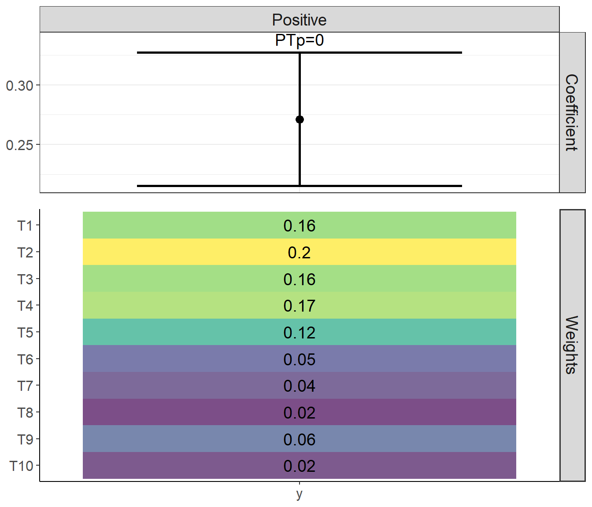
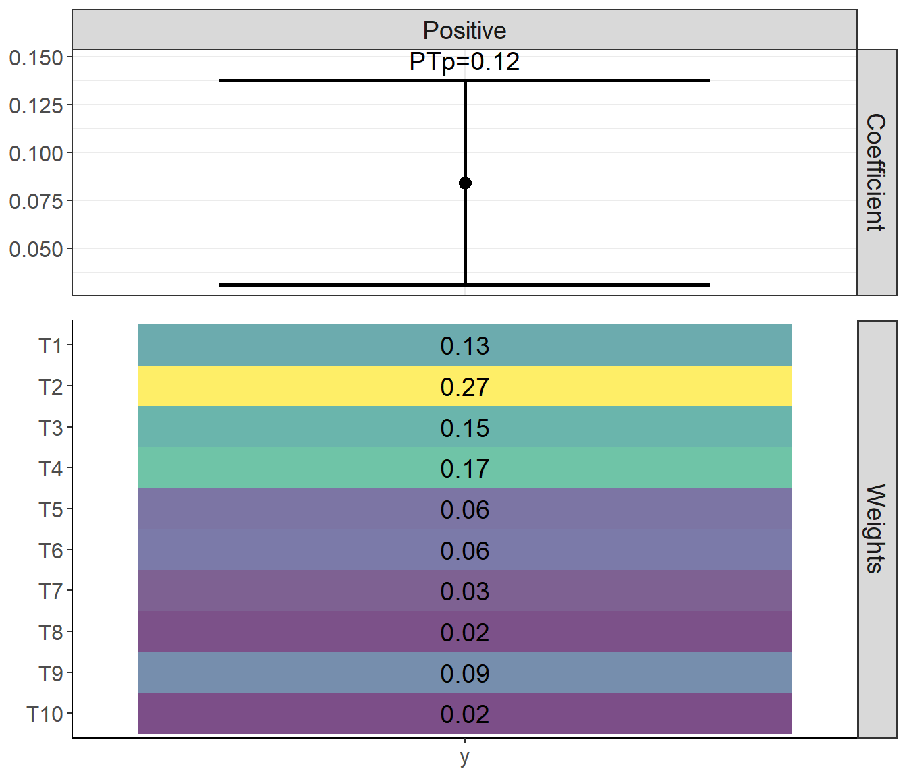
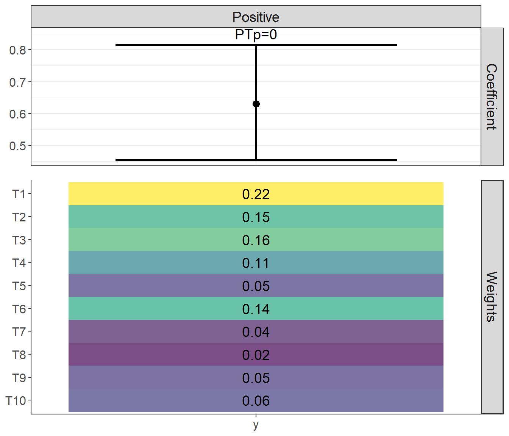

library(gWQS)
library(wqspt)How to use the wqspt package
wqspt
Introduction
Weighted quantile sum (WQS) regression is a statistical technique to evaluate the effect of complex exposure mixtures on an outcome (Carrico 2015). It is a single-index method which estimates a combined mixture sum effect as well as weights determining each individual mixture component’s contributions to the sum effect. However, the model features a statistical power and Type I error (i.e., false positive) rate tradeoff, as there is a machine learning step to determine the weights that optimize the linear model fit. If the full data is used to estimate both the mixture component weights and the regression coefficients, there is high power but also a high false positive rate since coefficient p-values are calculated for a weighted mixture independent variable with weights that have already been optimized to find a large effect.
We recently proposed alternative methods based on a permutation test that should reliably allow for both high power and low false positive rate when utilizing WQS regression. The permutation test is a method of obtaining a p-value by simulating the null distribution through permutations of the data. The permutation test algorithm is described more in detail and validated in Day et al. 2022. The version of this permutation test used for a continuous outcome variable has been applied in Loftus et al. 2021, Day et al. 2021, Wallace et al. 2022, Barrett et al. 2022, and Freije et al. 2022. Another version of the permutation test adapted for WQS logistic regression with a binary outcome variable is applied in Loftus et al. 2022.
About WQS
The goal of WQS regression is to determine whether an exposure mixture is associated with an outcome in a prespecified direction. It fits the following model:
\(Y = \beta_0 + \beta_1(\sum_{i=1}^{m} w_i {X_q}_i) + Z'\gamma\)
Where \(Y\) is the outcome variable, \(\beta_0\) is the intercept, \(\beta_1\) is the coefficient for the weighted quantile sum, \(\sum_{i=1}^{c} w_i {X_q}_i\) is the weighted index for the set of quantiled mixture exposures, \(Z\) is the set of covariates, and \(\gamma\) is the regression coefficients for the covariates.
A full description of the WQS methodology is described in Carrico 2015.
Permutation Test
The WQS regression comprises two steps, for which we typically split the data into a training and validation set. Doing this reduces statistical power since we are training our model on only part of the data. On the other hand, if we skip this training/test split, we can get a skewed representation of uncertainty for the WQS coefficient. A permutation test method gives us a p-value for the uncertainty while also allowing us to use the full dataset for training and validation. This p-value is based on comparing a test value (e.g., coefficient or naive p-values) to iterated values, and so the minimum non-zero p-value that can be detected by the permutation test would be 1 divided by the number of permutation test iterations. For example, if we run 200 iterations, we’d be able to define a p-value of as low as 1/200 = 0.005, and any lower p-value would appear as zero and be interpreted as <0.005.
Continuous outcome algorithm (linear regression)
Run WQS regression without splitting the data, obtaining a WQS coefficient estimate.
Regress the outcome on all covariates but not the WQS variable. Then obtain the predicted outcome values and their residuals from this regression.
Randomly permute the residual values and add them to the predicted outcome values to get a new outcome variable \(y*\).
Run a WQS regression without splitting the data in which \(y*\) replaces the vector of observed outcome variables, obtaining an estimate for the WQS coefficient \(\beta_1^*\).
Repeat steps 3 and 4.
Calculate the p-value by taking the proportion of \(\beta_1^*\) values greater than the WQS coefficient estimate obtained in Step 1.
Binary or Count outcome algorithms (Generalized linear models (GLMs))
Regress each of the \(m\) mixture components on all covariates \(Z\) and obtain a \(n\) observations x \(m\) matrix with columns being the residuals from each of the \(m\) models (\(R_{m|Z}\)).
Obtain the initial fit (\(fit1\)) by running a “non-split” WQS logistic regression (or other WQS GLM) in which the binary (or count) outcome variable \(Y\) is regressed on the WQS vector and the covariates, and the mixture matrix used to calculate the WQS vector is the matrix of residuals from Step 1, \(R_{m|Z}\).
Obtain the reduced fit (\(fit2\)) by running a logistic regression (or other GLM) regressing \(Y\) on \(Z\).
Calculate the test p-value (\(p_t\)) as \(1-pchisq(d(fit1)-d(fit2),1)\) where d is the deviance for a given model and \(pchisq(x,1)\) is the probability density function of the chi-square distribution in which the input \(x\) is the difference between the deviances of \(fit1\) and \(fit2\) and there is 1 degree of freedom.
Permute the rows of the \(R_{m|Z}\) residual matrix from Step 1 and repeat Step 2 to get a series of null fit1 models (\(fit1^*\)) for K iterations. Obtain a distribution of permuted p-values (\(p^*\)) using the following formula: \(p^*=1-pchisq(fit1^*)-d(fit2),1\)).
Obtain the number of permuted \(p^*\) less than or equal to the test \(p_t\) from Step 4 and divide that by the number of iterations K to calculate the permutation test p-value.
Note that the above algorithm has been validated in WQS logistic regressions but not yet for other forms of WQS GLMs (e.g., WQS Poisson regression). However, since deviances can also be derived from those models, the algorithm should work for those other WQS GLMs as well.
How to use the wqspt package
The wqspt package builds from the gWQS package.
The two main functions of the wqspt package are wqs_pt and wqs_full_perm.
wqs_pt
Arguments
wqs_pt uses a gwqs object (from the gWQS package) as an input. To use wqs_pt, we first need to run an initial permutation test reference WQS regression run while setting validation = 0. Note that permutation test can currently take in gwqs inputs with the following families: family = gaussian(link = "identity"), family = binomial() with any accepted link function (e.g., “logit” or “probit”), family = poisson(link = "log"), family = quasipoisson(link = "log"), and family = "negbin" for negative binomial. It is not currently able to accommodate multinomial WQS regression, stratified weights, or WQS interaction terms.
We will use this gwqs object as the model argument for the wqs_pt function and set the following additional parameters:
boots: Number of bootstraps for the WQS regression run in each permutation test iteration. Note that we may elect a bootstrap countbootslower than that specified in themodelobject for the sake of efficiency. If we do,wqs_ptwill run the iterated WQS regressions for the permutation test with the number of bootstraps defined inboots. Ifbootsis not specified, then the function will use the same bootstrap count in the permutation test iterated WQS regressions as that specified in the main WQS regression.niter: Number of permutation test iterations.b1_pos: A logical value that indicates whether beta values should be positive or negative.rs: A logical value indicating whether the random subset implementation for WQS should be performed (Curtin 2019)plan_strategy: Evaluation strategy for the plan function (“sequential”, “transparent”, “multisession”, “multicore”, “multiprocess”, “cluster”, or “remote”). See the documentation for the future::plan function for full details.
seed: Random seed for the permutation test WQS reference run
The arguments b1_pos and rs should be consistent with the inputs chosen in the model object. The seed should ideally be consistent with the seed set in the model object, though this is not required.
Outputs
The permutation test returns an object of class wqs_pt, which contains three sublists:
- perm_test
- pval: permutation test p-value
- Linear WQS regression only
- testbeta: reference WQS coefficient \(\beta_1\) value
- betas: a vector of \(\beta_1\) values from each iteration of the permutation test
- WQS GLM only
- testpval: test reference p-value
- permpvals: p-values from each iteration of the permutation test
- gwqs_main: main gWQS object (same as
modelinput) - gwqs_perm: permutation test reference gWQS object (NULL if model
family != "gaussian"or if same number of bootstraps are used in permutation test WQS regression runs as in the main run.)
Plotting method
The wqs_pt class has a wqspt_plot method to help visualize and summarize WQS permutation test results. Plots include (1) a forest plot of the beta WQS coefficient with the naive confidence intervals as well as the permutation test p-value and (2) a heatmap of the WQS weights for each mixture component.
wqs_full_perm
The second function wqs_full_perm is a full wrapper which implements the initial WQS regression run using gWQS::gwqs and the permutation test in one function call.
To use wqs_full_perm, you must specify the same required arguments as needed in the gwqs call. This function can run WQS regressions and the permutation test for the following families: family = gaussian(link = "identity"), family = binomial() with any accepted link function (e.g., “logit” or “probit”), family = poisson(link = "log"), family = quasipoisson(link = "log"), and family = "negbin" for negative binomial. wqs_full_permis not currently able to accommodate multinomial WQS regression, stratified weights, or WQS interaction terms.
For the bootstrap count b argument, you must specify b_main,the number of bootstraps for the main WQS regression run, as well as b_perm, the number of bootstraps for the permutation test reference WQS regression run (linear WQS regression only) and each WQS regression iteration of the permutation test. As with before, you can choose to set b_main \(>\) b_perm for the sake of efficiency. Finally, you should indicate the number of desired permutation test runs niter.
Since the WQS permutation test can be computationally intensive, you can specify stop_if_nonsig = TRUE if you do not wish for the permutation test to proceed if the naive main WQS regression run produces an nonsignificant result (if the p-value is below the stop_thresh argument, for which the default is 0.05). See Recommendations for Use section below.
The wqs_full_perm returns an object of class wqs_pt, with outputs described above.
Recommendations for Use
Larger bootstrap counts and numbers of iterations lead to better estimates, though it is unclear how many iterations or bootstraps are needed for a stable estimate. We generally recommend using 1000 bootstraps on the main WQS regression and then performing 200 iterations of 200-boostrap WQS regressions for the permutation test. However, this takes a substantial amount of computational time, and one could also get relatively stable p-values for instance for 100 iterations of 100-boostrap WQS regressions for the permutation test.
We recommend that users only apply the permutation test in cases where the naive WQS test approaches significance or near-significance. If the naive test produces a non-significant result, then there likely is no reason to run the permutation test, as it will produce a result which is more conservative than the naive method (i.e., it will have a larger p-value). This is the strategy that we have applied in our published papers (Loftus et al. 2021 and Day et al. 2021).
Examples
Example 1 (using wqs_pt)
This is an example where the WQS permutation test confirms a significant naive result.
We first load both the wqspt and gWQS packages.
Then we produce a simulated dataset with the following parameters:
- WQS coefficient \(\beta_1\): 0.2
- Mixture weights: 0.15 for first 5 components, 0.05 for remaining 5 components
# simulated dataset
sim_res1 <- wqs_sim(nmix = 10,
ncovrt = 10,
nobs = 1000,
ntruewts = 10,
ntruecovrt = 5,
truewqsbeta = 0.2,
truebeta0 = 2,
truewts = c(0.15, 0.15, 0.15, 0.15, 0.15,
0.05, 0.05, 0.05, 0.05, 0.05),
q = 10,
seed = 16)
sim_data1 <- sim_res1$Data
wqs_form <- formula(paste0("y ~ wqs + ", paste(paste0("C",1:10), collapse="+")))Now we run WQS regression on the simulated data.
# mixture names
mix_names1 <- colnames(sim_data1)[2:11]
# create reference wqs object
wqs_main1 <- gwqs(wqs_form, mix_name = mix_names1, data = sim_data1, q = 10, validation = 0,
b = 20, b1_pos = T, plan_strategy = "multicore", family = "gaussian",
seed = 16)Finally, we can perform a permutation test on the WQS object.
# run permutation test
perm_test_res1 <- wqs_pt(wqs_main1, niter = 50, boots = 5, b1_pos = T, seed = 16)Note that the naive WQS regression produces a significant result for the WQS coefficient (p-value < 0.001).
main_sum1 <- summary(perm_test_res1$gwqs_main)main_sum1$coefficients
#> Estimate Std. Error t value Pr(>|t|)
#> (Intercept) 1.716588215 0.13195745 13.0086490 7.960621e-36
#> wqs 0.271247707 0.02846484 9.5292204 1.183377e-20
#> C1 0.915972918 0.03235401 28.3109569 1.372658e-129
#> C2 1.837398541 0.03166084 58.0337820 1.460458e-320
#> C3 -1.567906582 0.03096844 -50.6291836 9.835375e-277
#> C4 -0.261844308 0.03025602 -8.6542893 1.987022e-17
#> C5 -0.350600283 0.03111404 -11.2682323 8.594271e-28
#> C6 0.017181769 0.03214707 0.5344739 5.931340e-01
#> C7 0.028020482 0.03007333 0.9317386 3.516993e-01
#> C8 0.006594393 0.03040937 0.2168540 8.283669e-01
#> C9 -0.075174923 0.03029635 -2.4813194 1.325512e-02
#> C10 -0.003960226 0.03079737 -0.1285898 8.977084e-01The permutation test confirms the significance of this result.
perm_test_res1$perm_test$pval
#> [1] 0Here are the summary plots:
wqspt_plot(perm_test_res1)$FullPlot
#> Warning in get_plot_component(plot, "guide-box"): Multiple components found;
#> returning the first one. To return all, use `return_all = TRUE`.
Example 2 (using wqs_pt)
This is an example where the WQS permutation test goes against a (false positive) significant naive result.
We produce a simulated dataset with the following parameters:
- WQS coefficient \(\beta_1\): 0
- Mixture weights: 0.15 for first 5 components, 0.05 for remaining 5 components
sim_res2 <- wqs_sim(nmix = 10,
ncovrt = 10,
nobs = 1000,
ntruewts = 10,
ntruecovrt = 5,
truewqsbeta = 0,
truebeta0 = 0.1,
truewts = c(0.15, 0.15, 0.15, 0.15, 0.15,
0.05, 0.05, 0.05, 0.05, 0.05),
q = 10,
seed = 16)
sim_data2 <- sim_res2$DataNow we run WQS regression as well as the permutation test on the simulated data.
# mixture names
mix_names2 <- colnames(sim_data2)[2:11]
# create reference wqs object
wqs_main2 <- gwqs(wqs_form, mix_name = mix_names2, data = sim_data2, q = 10, validation = 0,
b = 20, b1_pos = T, plan_strategy = "multicore", family = "gaussian",
seed = 16)
# run permutation test
perm_test_res2 <- wqs_pt(wqs_main2, niter = 50, boots = 5, b1_pos = T, seed = 16)Note that the naive WQS regression produces a significant result for the WQS coefficient (p-value = 0.002).
main_sum2 <- summary(perm_test_res2$gwqs_main)main_sum2$coefficients
#> Estimate Std. Error t value Pr(>|t|)
#> (Intercept) -0.242259146 0.12595439 -1.9233879 5.471846e-02
#> wqs 0.084337304 0.02709982 3.1120982 1.910997e-03
#> C1 0.916079837 0.03236572 28.3040164 1.530151e-129
#> C2 1.836539134 0.03166066 58.0069707 2.079028e-320
#> C3 -1.568725043 0.03099602 -50.6105377 1.279103e-276
#> C4 -0.260464045 0.03027002 -8.6046855 2.973949e-17
#> C5 -0.350431787 0.03114219 -11.2526386 1.005351e-27
#> C6 0.016352846 0.03216484 0.5084075 6.112811e-01
#> C7 0.027852144 0.03008416 0.9258077 3.547720e-01
#> C8 0.006968031 0.03042095 0.2290537 8.188746e-01
#> C9 -0.074755354 0.03031780 -2.4657251 1.384261e-02
#> C10 -0.003661685 0.03081250 -0.1188377 9.054281e-01The permutation test, however, repudiates the significance of these plots (p = 0.12).
perm_test_res2$perm_test$pval
#> [1] 0.12Here are the summary plots:
wqspt_plot(perm_test_res2)$FullPlot
#> Warning in get_plot_component(plot, "guide-box"): Multiple components found;
#> returning the first one. To return all, use `return_all = TRUE`.
Example 3 (using wqs_full_perm)
Using the same data as in Example 1, we run the WQS regression with permutation test using the full wrapper wqs_full_perm call.
perm_test_res3 <- wqs_full_perm(wqs_form,
data = sim_data1,
mix_name = mix_names1,
q = 10,
b_main = 20,
b_perm = 5,
b1_pos = T,
niter = 50,
seed = 16,
plan_strategy = "multicore")wqspt_plot(perm_test_res3)$FullPlot
#> Warning in get_plot_component(plot, "guide-box"): Multiple components found;
#> returning the first one. To return all, use `return_all = TRUE`.
Example 4 (using wqs_full_perm on binary outcome example)
This is an example in which we apply the logistic regression version of the WQS permutation test.
We produce a simulated dataset with the following parameters:
- WQS coefficient \(\beta_1\): 0.4
- Mixture weights: 0.15 for first 5 components, 0.05 for remaining 5 components
sim_res3 <- wqs_sim(nmix = 10,
ncovrt = 10,
nobs = 1000,
ntruewts = 10,
ntruecovrt = 5,
truewqsbeta = 0.4,
truebeta0 = -2.5,
truewts = c(0.15, 0.15, 0.15, 0.15, 0.15,
0.05, 0.05, 0.05, 0.05, 0.05),
q = 10,
family = "binomial",
seed = 16)
sim_data3 <- sim_res3$Data
perm_test_res4 <- wqs_full_perm(wqs_form,
data = sim_data3,
mix_name = mix_names1,
q = 10,
b_main = 20,
b_perm = 5,
b1_pos = T,
niter = 50,
seed = 16,
plan_strategy = "multicore",
family = "binomial")wqspt_plot(perm_test_res4)$FullPlot
#> Warning in get_plot_component(plot, "guide-box"): Multiple components found;
#> returning the first one. To return all, use `return_all = TRUE`.
References
Barrett, E. S., Corsetti, M., Day, D., Thurston, S. W., Loftus, C. T., Karr, C. J., … & Sathyanarayana, S. (2022). Prenatal phthalate exposure in relation to placental corticotropin releasing hormone (pCRH) in the CANDLE cohort. Environment International, 160, 107078.
Carrico, C., Gennings, C., Wheeler, D. C., & Factor-Litvak, P. (2015). Characterization of weighted quantile sum regression for highly correlated data in a risk analysis setting. Journal of Agricultural, Biological, and Environmental Statistics, 20(1), 100-120.
Curtin, P., Kellogg, J., Cech, N., & Gennings, C. (2019). A random subset implementation of weighted quantile sum (WQSRS) regression for analysis of high-dimensional mixtures. Communications in Statistics-Simulation and Computation, 50(4), 1119-1134.
Day, D. B., Collett, B. R., Barrett, E. S., Bush, N. R., Swan, S. H., Nguyen, R. H., … & Sathyanarayana, S. (2021). Phthalate mixtures in pregnancy, autistic traits, and adverse childhood behavioral outcomes. Environment International, 147, 106330.
Day, D. B., Sathyanarayana, S., LeWinn, K. Z., Karr, C. J., Mason, W. A., & Szpiro, A. A. (2022). A permutation test-based approach to strengthening inference on the effects of environmental mixtures: comparison between single index analytic methods. Environmental Health Perspectives, 130(8).
Freije, S. L., Enquobahrie, D. A., Day, D. B., Loftus, C., Szpiro, A. A., Karr, C. J., … & Sathyanarayana, S. (2022). Prenatal exposure to polycyclic aromatic hydrocarbons and gestational age at birth. Environment International, 164, 107246.
Loftus, C. T., Bush, N. R., Day, D. B., Ni, Y., Tylavsky, F. A., Karr, C. J., … & LeWinn, K. Z. (2021). Exposure to prenatal phthalate mixtures and neurodevelopment in the Conditions Affecting Neurocognitive Development and Learning in Early childhood (CANDLE) study. Environment International, 150, 106409.
Loftus, C., Szpiro, A. A., Workman, T., Wallace, E. R., Hazlehurst, M. F., Day, D. B., … & Karr, C. J. (2022). Maternal exposure to urinary polycyclic aromatic hydrocarbons (PAH) in pregnancy and childhood asthma in a pooled multi-cohort study. Environment International, 170, p.107494.
Renzetti, S., Curtin, P., Just, A. C., Bello, G., & Gennings, C. (2021). ‘gWQS: Generalized Weighted Quantile Sum Regression’. https://CRAN.R-project.org/package=gWQS.
Wallace, E. R., Ni, Y., Loftus, C. T., Sullivan, A., Masterson, E., Szpiro, A., … & Sathyanarayana, S. (2022). Prenatal urinary metabolites of polycyclic aromatic hydrocarbons and toddler cognition, language, and behavior. Environment International, 159, 107039.